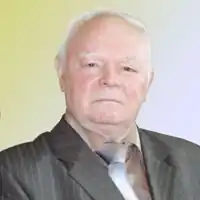

Ярмиш Юрій Феодосійович (25 травня 1935, Кам'янське – 23 жовтня 2013) – український письменник, майстер авторської казки. Професор кафедри періодичної преси Інституту журналістики Київського національного університету імені Тараса Шевченка. Кандидат філологічних наук.
Народився в сім'ї вчителів. За особистими спогадами, частим гостем родини Ярмишів був академік Дмитро Яворницький, розповіді якого справили вплив на формування світогляду майбутнього письменника.
Навчався в середній школі № 4 міста Дрогобич; середню освіту закінчив у місті Нікополь. У 1953 вступив на факультет журналістики Київського державного університету імені Т. Г. Шевченка. 1958 року після закінчення університету почав працювати у Кримському державному видавництві в Сімферополі. З 1963 року – головний редактор журналу "Піонерія". З 1974 по 1988 рік – головний редактор журналу Спілки письменників України "Радуга". Перша збірка казок ("Вітрисько") вийшла 1960 року. У 1963 році Юрія Ярмиша прийняли до Спілки письменників України. Доробок письменника налічує понад 60 книжок казок, притч, байок, серед яких: "Чудесні моря", "Казка стукає у двері", "Живі малюнки", "Маленькі казки", "Чарівні струмки", "Цікавий промінець", "Лебедина казка", "Капітанова ", "Золотий кораблик", "Два майстри", "Чарівними стежками", "Весела мандрівка", "Живі малюнки", "Великий мисливець", "Чарівні ліки", "Лісові балакуни", "Їжачок і Соловейко", "Солодкий Марципан" та інші. Книжки письменника перекладено п'ятнадцятьма мовами, зокрема англійською, болгарською, німецькою, французькою, іспанською. Літературна творчість Юрія Ярмиша відзначена багатьма літературними преміями: премією журналу "Перець" (1970), медаллю А. С. Макаренка (1972), республіканською літературною премією імені М. Островського (1974, за книжки "Золотий кораблик", "Сонечко", "Вовчі окуляри"), Почесною грамотою Президії Верховної Ради УРСР (1985), літературною премією ім. Ю. Яновського (2001, за цикл новел-фантазій), премією Кабінету Міністрів України імені Лесі Українки за літературно-мистецькі твори для дітей та юнацтва (2006). Юрій Ярмиш також працював дослідником-літературознавцем у галузі вивчення казки як літературного жанру та в галузі дослідження дитячої літератури. Був членом Міжнародного товариства дослідників літератури для дітей та юнацтва.